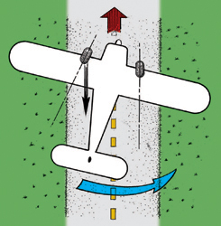

Resbale intencionado
¡Hola! Soy el Capitán Viento. Hoy aprenderemos sobre un truco que los pilotos usan a veces, llamado "resbale intencionado". Imagina que estás en un avión y necesitas bajar rápido, pero sin ir más rápido hacia adelante. Los pilotos pueden hacer que un ala se incline y usar los pedales para mantener el avión recto, pero con más resistencia al aire. Esto ayuda al avión a bajar más rápido, como si estuviera frenando en el aire. También es útil cuando hay mucho viento de un lado, para que el avión pueda aterrizar bien en la pista. ¡Recuerda, es un truco especial para situaciones especiales!
